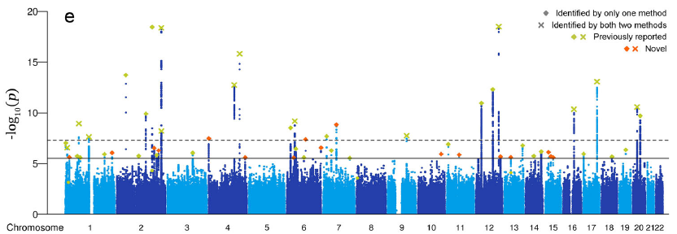
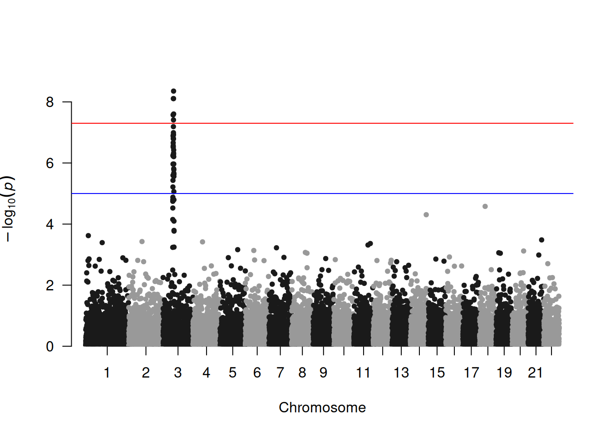
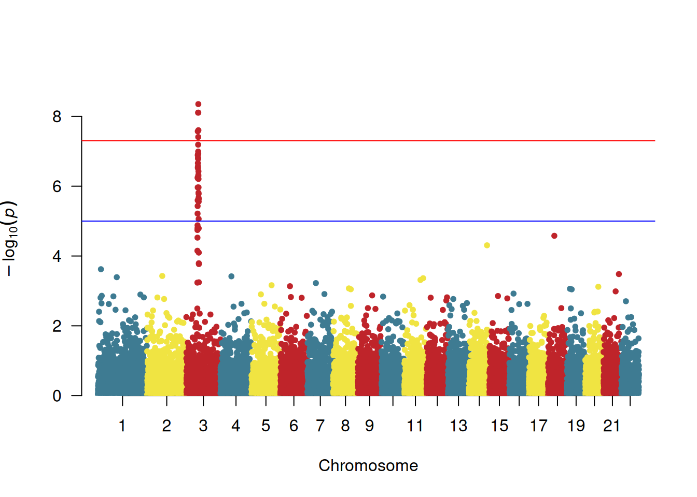
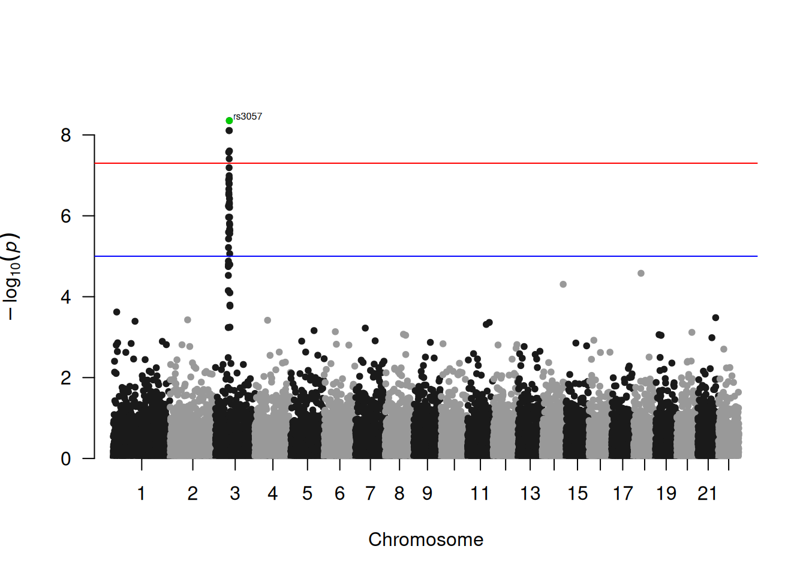
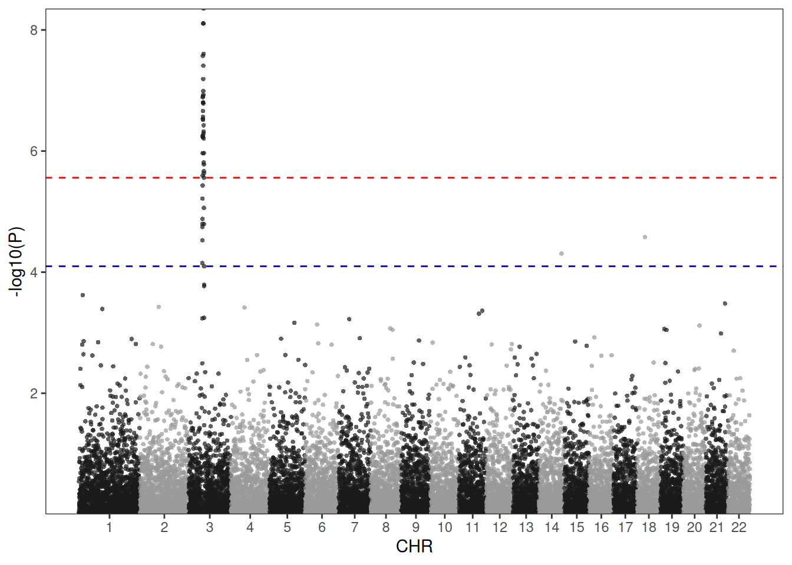
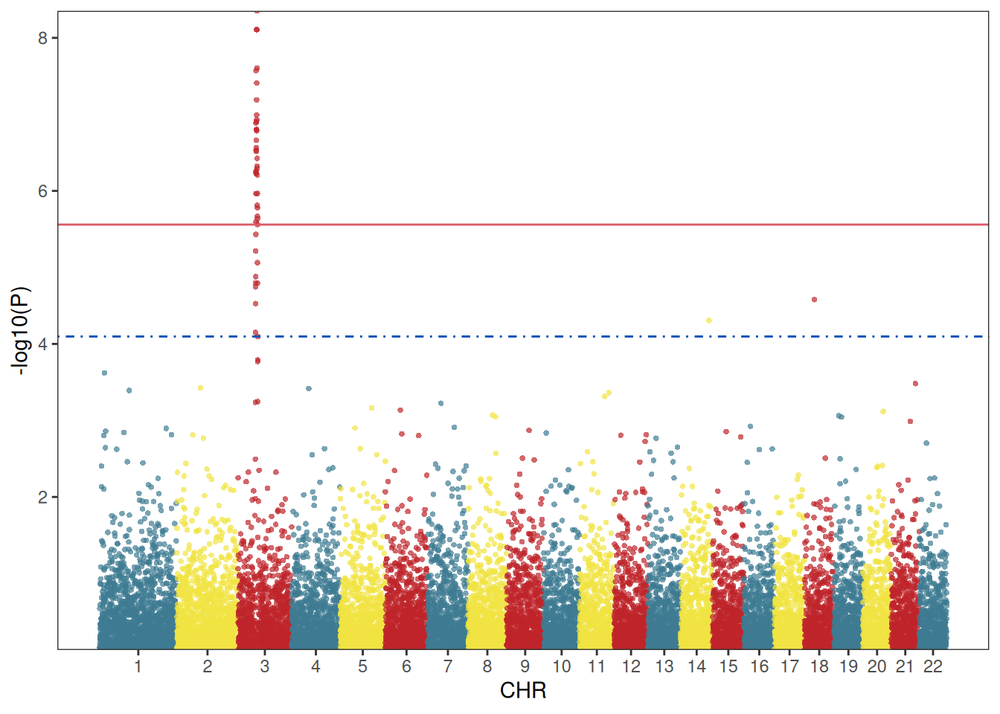
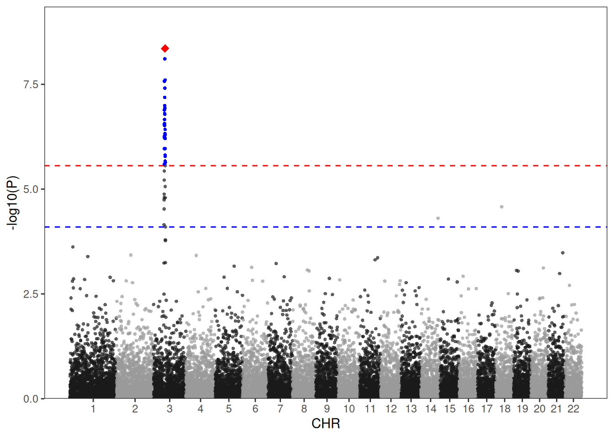
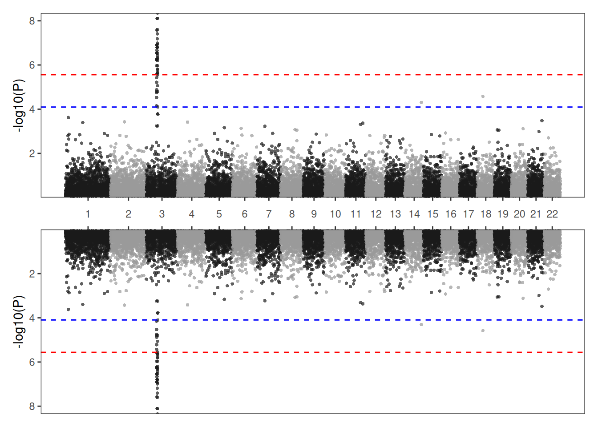
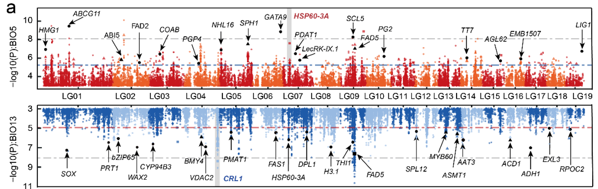

# 安装包
if (!requireNamespace("qqman", quietly = TRUE)) {
install.packages("qqman")
}
if (!requireNamespace("tidyverse", quietly = TRUE)) {
install.packages("tidyverse")
}
if (!requireNamespace("aplot", quietly = TRUE)) {
install.packages("aplot")
}
# 加载包
library(qqman)
library(tidyverse)
library(aplot)曼哈顿图
Manhattan plot，即曼哈顿图，是一种用于描述染色体上的突变与性状之间关联强弱的图，由于图形形似美国曼哈顿区的城市景观因此得名曼哈顿图。绘制曼哈顿图一般使用散点图的形式，但是也可以使用柱状图或折线图展示，常用R包qqman或者直接使用ggplot2绘制。
示例

曼哈顿图的横坐标为染色体位置，纵坐标为Pvalue或者诸如ΔSNP、ED等一切可以表示突变位点与性状之间关联强弱的值。下面将使用Pvalue作为示例。
环境配置
系统要求： 跨平台（Linux/MacOS/Windows）
编程语言：R
依赖包：
qqman;tidyverse;aplot
数据准备
数据使用qqman中自带的gwasResults数据集。
# 查看数据集
head(gwasResults) SNP CHR BP P
1 rs1 1 1 0.9148060
2 rs2 1 2 0.9370754
3 rs3 1 3 0.2861395
4 rs4 1 4 0.8304476
5 rs5 1 5 0.6417455
6 rs6 1 6 0.5190959可视化
1. qqman绘制曼哈顿图
manhattan和qq是qqman中最重要的两个函数，分别负责绘制曼哈顿图和QQ图：
提示
manhattan 参数:
-
x：输入数据，要求格式为dataframe数据框 -
chr：记录染色体信息的列名，必须是数字 -
bp：记录碱基坐标位置信息的列名，必须是数字 -
p：记录P值或其他值信息的列名，必须是数字 -
snp：记录SNP名称的列名 -
col：交替的颜色设置 -
chrlabs：X轴上染色体的名称，默认与数据框中的名称一致 -
suggestiveline：蓝色阈值线，设置为FALSE时不绘制 -
genomewideline：红色阈值线，设置为FALSE时不绘制 -
highlight：高亮的SNP名称 -
logp：设置为TRUE时，纵轴为-log10(P)，设置为FALSE时纵轴为P -
annotatePval：设置阈值，标注图中高于该阈值的SNP -
annotateTop：每条染色体仅标注一个最高的SNP
# 基础曼哈顿图
manhattan(gwasResults)
此图展示了基因组上所有SNP与性状的关联情况，其中三号染色体上存在一个明显的峰，表明三号染色体上存在一个可能是与性状强相关的区域。
manhattan中染色体的颜色可以通过col参数修改：
# 颜色设置
manhattan(gwasResults, col = c("#3E7B92","#F0E442","#BF242A"))
对特定SNP进行高亮显示：
# 高亮设置
manhattan(gwasResults, highlight ="rs3057")标注高于阈值的SNP(每条染色体一个)：
# 注释设置
manhattan(gwasResults, highlight ="rs3057", annotatePval=1e-5)
2. ggplot2绘制曼哈顿图
使用qqman绘制曼哈顿图能满足大部分需求，然而仍有部分需求不能满足，例如设置阈值线的样式和颜色，此时可以用ggplot2绘图。
# ggplot2绘制曼哈顿图
df <- gwasResults
df$CHR <- factor(as.character(df$CHR),levels=unique(df$CHR))
len <-
df %>%
group_by(CHR) %>% # CHR为染色体信息的列名
summarise(len=max(BP)) # BP为位置信息的列名
len <- # 计算snp在图中的位置
len %>% summarise(pos=cumsum(len)-len)
rownames(len) <- unique(df$CHR)
df$BP <- df$BP+len$pos[match(df$CHR,rownames(len))]
X_axis <- df %>% group_by(CHR) %>% summarize(center=( max(BP) + min(BP) ) / 2 ) # 计算染色体的位置
# 下面对P值进行多重矫正，qqman中对P取固定的阈值其实是不可取的。
bf <- max(df$P[p.adjust(df$P, method = "bonferroni")<0.05]) # 使用bonferroni法
fdr<- max(df$P[p.adjust(df$P, method = "fdr")<0.05]) # 使用fdr法
col <- c("gray10", "gray60") # 此处设置染色体颜色
cols <- rep(col ,nrow(X_axis))
line_col1 <- "red" # 此处阈值线颜色
line_col2 <- "blue"
line_type1 <- "dashed" # 此处阈值线类型
line_type2 <- "dashed"
ggplot()+
geom_point(df,mapping=aes(x=BP,y=-log10(P),color=CHR),alpha=0.7,size=1,shape=16)+
geom_hline(yintercept = -log10(bf),lty=line_type1 ,color= line_col1 )+
geom_hline(yintercept = -log10(fdr),lty=line_type2 ,color= line_col2)+
scale_color_manual(values = cols ) +
theme_bw()+
theme(panel.grid.major = element_blank(),panel.grid.minor=element_blank(),
legend.position = 'none')+
xlab("CHR")+ylab("-log10(P)")+ #横轴纵轴标题
scale_x_continuous( limits = c(0, max(df$BP)),label = X_axis$CHR, breaks= X_axis$center ) +
scale_y_continuous(expand = c(0,0)) 
使用ggplot2绘制曼哈顿图的好处在于可以高度自定义图像的风格，可以注意到在上面我已经设置好了几个变量，只需要对这些变量进行修改即可自定义颜色以及阈值线样式。
col <- c("#3E7B92","#F0E442","#BF242A") #此处设置染色体颜色
cols <- rep(col ,nrow(X_axis))
line_col1 <- "#DB5A6A" #此处阈值线颜色
line_col2 <- "#0050B7"
line_type1 <- "solid" #此处阈值线类型，可以设置的线条类型有：”solid“,“blank”, “solid”, “dashed”, “dotted”, “dotdash”, “longdash”, “twodash”
line_type2 <- "dotdash"
ggplot()+
geom_point(df,mapping=aes(x=BP,y=-log10(P),color=CHR),alpha=0.7,size=1,shape=16)+
geom_hline(yintercept = -log10(bf),lty=line_type1 ,color= line_col1 )+
geom_hline(yintercept = -log10(fdr),lty=line_type2 ,color= line_col2)+
scale_color_manual(values = cols ) +
theme_bw()+
theme(panel.grid.major = element_blank(),panel.grid.minor=element_blank(),
legend.position = 'none')+
xlab("CHR")+ylab("-log10(P)")+
scale_x_continuous( limits = c(0, max(df$BP)),label = X_axis$CHR, breaks= X_axis$center ) +
scale_y_continuous(expand = c(0,0)) 
由于ggplot2绘图是将一张张图叠加起来，因此可以将筛选后的SNP用geom_point叠加到原图上：
df2 <- df[df$P<bf,]
df3 <- df[df$SNP=="rs3057",]
col <- c("gray10", "gray60") #此处设置染色体颜色
cols <- rep(col ,nrow(X_axis))
line_col1 <- "red" #此处阈值线颜色
line_col2 <- "blue"
line_type1 <- "dashed" #此处阈值线类型
line_type2 <- "dashed"
ggplot()+
geom_point(df,mapping=aes(x=BP,y=-log10(P),color=CHR),alpha=0.7,size=1,shape=16)+
geom_point(df2,mapping=aes(x=BP,y=-log10(P)),color="blue",size=1,shape=16)+
geom_point(df3,mapping=aes(x=BP,y=-log10(P)),color="red",size=3,shape=18)+
geom_hline(yintercept = -log10(bf),lty=line_type1 ,color= line_col1 )+
geom_hline(yintercept = -log10(fdr),lty=line_type2 ,color= line_col2)+
scale_color_manual(values = cols ) +
theme_bw()+
theme(panel.grid.major = element_blank(),panel.grid.minor=element_blank(),
legend.position = 'none')+
xlab("CHR")+ylab("-log10(P)")+
scale_x_continuous( limits = c(0, max(df$BP)),label = X_axis$CHR, breaks= X_axis$center ) +
scale_y_continuous(limits = c(0, max(-log10(df$P))+1),expand = c(0,0)) 
当你有两个性状时可能需要将两个性状的GWAS结果同时展现在结果上，可以使用下列方法绘制双向曼哈顿图。这里只用一组数据作为示例。
col <- c("gray10", "gray60") #此处设置染色体颜色
cols <- rep(col ,nrow(X_axis))
line_col1 <- "red" #此处阈值线颜色
line_col2 <- "blue"
line_type1 <- "dashed" #此处阈值线类型
line_type2 <- "dashed"
p1 <-
ggplot()+
geom_point(df,mapping=aes(x=BP,y=-log10(P),color=CHR),alpha=0.7,size=1,shape=16)+
geom_hline(yintercept = -log10(bf),lty=line_type1 ,color= line_col1 )+
geom_hline(yintercept = -log10(fdr),lty=line_type2 ,color= line_col2)+
scale_color_manual(values = cols ) +
theme_bw()+
theme(panel.grid.major = element_blank(),panel.grid.minor=element_blank(),
axis.text.x = element_text(vjust = -2),
axis.title.x = element_blank(),
legend.position = 'none')+
ylab("-log10(P)")+ #横轴纵轴标题
scale_x_continuous( limits = c(0, max(df$BP)),label = X_axis$CHR, breaks= X_axis$center ) +
scale_y_continuous(expand = c(0,0))
p2 <-
ggplot()+
geom_point(df,mapping=aes(x=BP,y=-log10(P),color=CHR),alpha=0.7,size=1,shape=16)+
geom_hline(yintercept = -log10(bf),lty=line_type1 ,color= line_col1 )+
geom_hline(yintercept = -log10(fdr),lty=line_type2 ,color= line_col2)+
scale_color_manual(values = cols ) +
theme_bw()+
theme(panel.grid.major = element_blank(),panel.grid.minor=element_blank(),
axis.text.x = element_blank(),axis.title.x = element_blank(),
legend.position = 'none')+
ylab("-log10(P)")+
scale_x_continuous( limits = c(0, max(df$BP)),label = X_axis$CHR, breaks= X_axis$center ,position = 'top') +
scale_y_reverse(expand = c(0,0))
p1/p2
应用场景
fig-HistApplications}

曼哈顿图应用 :::
此图展示了杨树上的SNP位点与温度（上图）/降雨（下图）之间的关联 [1]。
参考文献
[1] Sang Y, Long Z, Dan X, Feng J, Shi T, Jia C, Zhang X, Lai Q, Yang G, Zhang H, Xu X, Liu H, Jiang Y, Ingvarsson PK, Liu J, Mao K, Wang J. Genomic insights into local adaptation and future climate-induced vulnerability of a keystone forest tree in East Asia. Nat Commun. 2022 Nov 1;13(1):6541. doi: 10.1038/s41467-022-34206-8. PMID: 36319648; PMCID: PMC9626627.